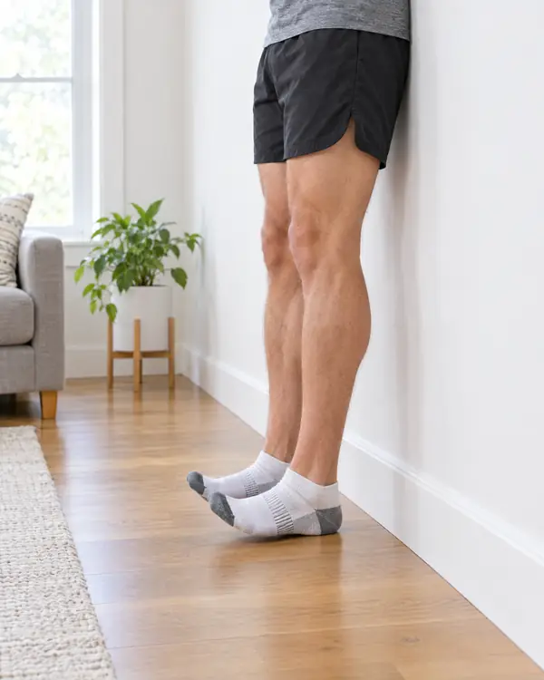
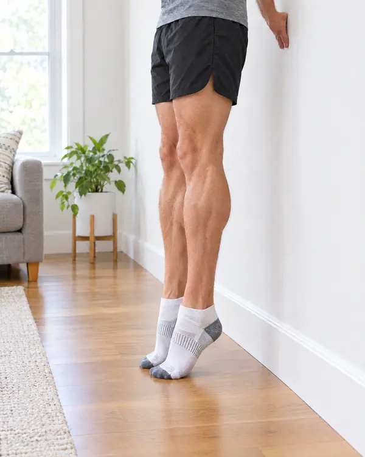
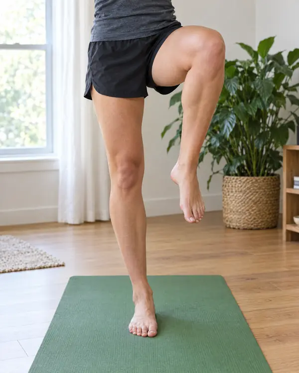
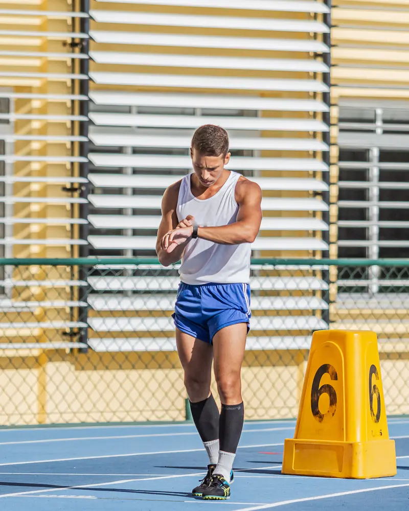
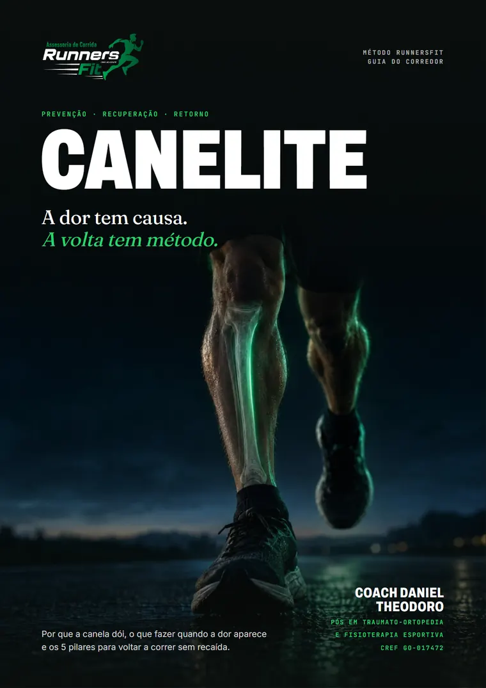

Guia de volta
Canelite
- Atleta
- você, com a canela doendo
- Treinador
- Daniel TheodoroCapitão do Exército · CREF GO-017472
A dor tem causa. A volta tem método.
O guia de canelite do Coach Daniel Theodoro: o que é dor normal, o que é sinal de alerta e como voltar a correr, semana a semana.
Quero voltar a correrE-book em PDF · 25 páginas · leitura de 15 minutos
Retorno gradual · km por semana
Terminou o treino e a canela reclamou de novo.
Na borda de dentro, espalhada. Às vezes só depois da corrida. Às vezes já no aquecimento.
E vem a dúvida: é normal? Paro? Continuo?
ignorar e parar tudo são os dois caminhos pra recaída · p. 23
Canelite é carga maior que preparo.
Cada passada joga na perna de duas a três vezes o peso do seu corpo. Quando o treino sobe mais rápido do que o músculo aguenta, quem paga é a tíbia.
~2.250 impactos em cada perna num 5 km de iniciante. a tíbia recebe todos · p. 7
Antes de tudo: sinal de alerta.
Alguns sinais pedem médico ou fisioterapeuta, não um guia. Marque se tiver algum.
Cinco pilares, nessa ordem.
Primeiro acalma, depois ajusta, solta, fortalece e volta. Cada pilar tem o que fazer e quando avançar.
| Pilar | O que você faz | Pág. |
|---|---|---|
| 1Protocolo PRICE | Acalma a dor nos primeiros dias | 16 |
| 2Controle da carga | Ajusta o treino pela escala da dor, de 0 a 10 | 17 |
| 3Mobilidade | Solta o tornozelo travado, que joga o impacto na tíbia | 18 |
| 4Fortalecimento | 6 exercícios em casa, uns 25 minutos, 3 vezes por semana | 19 |
| 5Retorno gradual | Volta por critério, com a regra das 24 horas | 21 |



em casa, sem equipamento · p. 2
A volta tem critério, não calendário.
Antes da primeira passada, o guia traz um teste de seis itens (p. 22). Você volta quando passa em todos. Três deles:
- Caminho 30 minutos sem dor na canela
- Faço todo o fortalecimento sem dor, durante e depois
- Saltito 10 vezes num pé só, em cada perna, sem dor
“A dor do dia seguinte vale mais que a dor durante o treino.”

Capitão do Exército, educador físico e pós em traumato-ortopedia.
- Treinador
- Daniel Theodoro, RunnersFit, Jataí (GO)
- Posto
- Capitão do Exército
- Formação
- Ciências Militares, AMAN (2019) · Educação Física, EsEFEx (2022)
- Pós
- Traumato-ortopedia e Fisioterapia Esportiva
- Registro
- CREF GO-017472
- Na pista
- Desde 2015 · 400 m em 50 s (2015–2019) · 5 km em 17'45" (desde 2020)
- Alunos
- Mais de 40 já treinaram com ele, do primeiro quilômetro à maratona
Corre melhor quem corre com técnica.
A frase do Daniel que fecha o guia, p. 25.
Rascunho. Depoimentos de exemplo, pra mostrar a seção. Antes de publicar, entram os reais ou a seção sai. Pra cada um: nome, foto, desde quando corre com o Daniel e autorização por escrito.
Quem já passou por isso.
Eu achava que toda dor na canela era sinal pra parar tudo. Aprendi a diferença e só cortei o volume.
Os exercícios cabem antes do trabalho. Três vezes por semana, menos de meia hora.

Tudo o que você leva.
- O guia completo, 25 páginas ilustradas
- A régua da dor: o que é normal e o que é alerta
- O que fazer nos primeiros dias, passo a passo
- 6 exercícios com séries, ilustração e o erro mais comum
- O retorno semana a semana e a regra das 24 horas
- O teste pra saber se você está pronto pra voltar
Páginas reais do guia. Toque pra ver em tamanho de leitura.
Escrito pelo Coach Daniel TheodoroCREF GO-017472 · capitão do Exército
O guia completo sai por
R$ 29,90
R$ 29,90 R$ 19,90
Preço do grupo até 25/11, às 23h59.
Abre em 23/11
No grupo, R$ 19,90 até 25/11, às 23h59. Depois, R$ 29,90.
Pagamento único · o PDF é seu
Quero o e-bookQuero entrar no grupoAcesso ao PDF no seu e-mail assim que o pagamento aprova · PIX ou cartão · 7 dias de garantia
Dor em repouso, num ponto só do osso ou com inchaço? Veja os sinais de alerta antes.
Entra no grupo de avisos do WhatsApp · aviso no dia da abertura · sai quando quiser
Garantia de 7 dias. Não gostou, pede o dinheiro de volta, sem pergunta. É direito seu pelo Código de Defesa do Consumidor.
Não sou de Jataí. Serve pra mim?
Serve. O guia é pra corredor de qualquer cidade. Só a assessoria é presencial.
Como eu recebo?
Assim que o pagamento aprova, o acesso ao PDF chega no seu e-mail. Abre no celular, sem instalar nada.
O guia substitui a fisioterapia?
Não. Ele é pra dor de sobrecarga. Dor forte, em repouso ou com inchaço pede avaliação.
RunnersFit · CNPJ a preencher